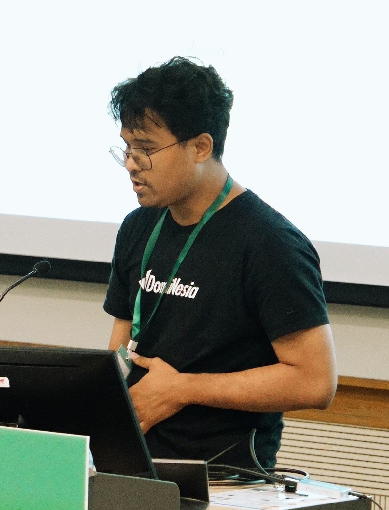

Python × eBPF
BCC compiles C at runtime. Python-BPF compiles Python ahead of time. We measured both to 2 million events.

Systems engineer at DomaiNesia — hosting and cloud, Yogyakarta, Indonesia.
eBPF from Python — kernel observability without writing C.
Third year running. Twice at APAC, once at PyCon ID.
This talk is one habit from CTF work: measure every layer, trust no layer.
Same tracepoint, same verifier, same maps → the difference is in the glue.
01
From process launch to a loaded BPF program.
| item | value |
|---|---|
| tracepoint | sys_enter_execve |
| trigger | 2,000,000 fork + execve pairs (C binary) |
| program | map_1_perf_timed_count.py — map counter + perf event |
| host | vmnono (nono1), 3 CPUs |
Both frameworks run the same program — so any difference is the framework, not the program.
Python-BPF starts about 22× faster. Ranges: BCC 0.375–0.580 s · Python-BPF 0.020–0.027 s.
| at init | BCC | Python-BPF |
|---|---|---|
| child process | none | llc |
| header blocks read | 20,768 | 160 |
BCC compiles the C in its own process. Python-BPF hands compilation to a child and ships a finished object.
The 0.02 s is not free compile — it is compile that happened before the run.
02
Two million events, same program, CPU only.
One program shape, three bodies — the kernel program never changes.
events delivered — trigger sent 2,000,000
events delivered — trigger sent 2,000,000
Delivery is equal → CPU is the only open question.
Ratio 5.2× at N=1000, 3.7× at N=2000. Axis: total CPU, 0–145 s (full scale shown on the next slide).
At N ≤ 2000, startup dominates — these are not per-event numbers.
Startup is 0.3% of a 1763 s run — what is left is per-event cost.
The callback does nothing. BCC still spends 19.2 s more — ratio 1.23.
So the cost is in making the call, not in what the callback does.
Python-BPF binds with pybind11 · BCC binds with ctypes — and Python-BPF pays the ctypes cost on 0% of cycles.
84% of BCC's cycles sit in ctypes + libffi.
So does libbcc depend on libffi?
ask · pause · then press →
No. Not one ffi library in its dependencies.
libffi arrives through import ctypes, in the same process, on a different path.
libclang-cpp.so.21.1 libLLVM.so.21.1 libelf.so.1 libbpf.so.1
libstdc++.so.6 libm.so.6 libgcc_s.so.1 libc.so.6
python3 +- bcc/__init__.py:17 import ctypes as ct | +- _ctypes...so -> libffi.so.8 IMPORT cost +- bcc/libbcc.py ctypes.CDLL("libbcc.so.0") +- libbcc.so.0 -> libbpf.so.1 eBPF cost
Two branches off CPython — no edge between them.
03
The read loop — where I had it wrong twice.
b.perf_buffer_poll(1) vs perf.poll(1)
Are they waiting on the same thing?
ask · pause · then press →
Yes. Same three perf buffer fds, same 1 ms timeout.
Only the syscall underneath differs — the next slide shows it.
1.96 syscalls per event for BCC · 1.03 for Python-BPF.
1 ms timer → 1.375 ms
2,037,562 vs 1,978,114 calls
1 ms timer → 1.373 ms
95% of wakes carry data, not timeouts
epoll earns its keep when you watch hundreds of fds. At three, the work is the same.
The trigger sets the pace, not the framework — so every number in this deck is CPU.
The trigger (~1400 s) runs inside the poll loop — not beside it.
04
Four limits in Python-BPF today, all found by building a real tool.
| Python-BPF | BCC | |
|---|---|---|
| raise the signal | user space, after trace_pipe | bpf_send_signal, in kernel |
| helpers available | 18 | 36 |
| bpf_send_signal | absent | present |
Both kill the trigger. BCC needs no user space hop — trigger returns rc = -9.
But neither denies a syscall: the signal fires on arrival back from the probe. A seccomp filter runs before the call.
Two sections with the same context annotation share one DILocalVariable debug node. llvmlite merges equal nodes. Python-BPF then adds scope to that node.
| debug node | shared by cache | cycle |
|---|---|---|
| DIDerivedType | yes | no |
| DISubroutineType | yes | no |
| DILocalVariable | yes | yes |
| DISubprogram | no, name differs | holds the loop |
The merged node is the one that gets mutated.
fn A kprobe --+
+--> DILocalVariable (one object)
fn B kretprobe --+ | scope
v
DISubprogram
| retainedNodes
+--> back to DILocalVariable
hash(operands) walks the ring
RecursionError in Module.add_debug_info to hash(DILocalVariable). Fix: build the node outside the cache. Until then: one section per file.
Program: kprobe_unlink.py — @section("kprobe/do_unlinkat"), a kprobe on do_unlinkat: ctx.di is dfd, ctx.si is arg 2, a struct filename *. Three attempts to read its name:
| attempt | helper | result |
|---|---|---|
| read struct filename.name | probe_read | Struct type … not found |
| read into local str(256) | probe_read_str | Variable 'buf' not found |
| read into c_uint64 | probe_read_str | 8 bytes — truncates |
Not garbage: the second dereference is missing. probe_read gives an i64; probe_read_str wants an i8*. No inttoptr.
@bpf
@section("kprobe/do_unlinkat")
def do_unlinkat_entry(ctx: struct_pt_regs) -> c_int64:
fname_ptr = ctx.si # struct filename *, arg 2
name_str = 0 # 8-byte stack slot
probe_read(name_str, 8, fname_ptr)
print(f"name={name_str}") # 0xffff8f2d4705c000
return 0
Reads the name pointer as a signed i64 — the string itself is never dereferenced.
| construct | what happens |
|---|---|
| ctx.args[0] | falls through — no code emitted |
| count += 1 | a plain add, not atomic |
A map counter can lose updates — BCC emits one atomic read-modify-write for the same line. That is the Count.update(...) line from the program you saw in the setup.
Both are compiler gaps, not design limits.
One print, four values → silent.
Is that Python-BPF, or the kernel?
ask · pause · then press →
The kernel. Both frameworks. bpf_trace_printk takes three values after the format string.
fmt + size + 3 varargs = 5, the eBPF helper argument cap. A framework that tried four would fail the verifier.
The count is not the finding. The silence is.
| axis | BCC | Python-BPF | why |
|---|---|---|---|
| startup CPU | 0.45 s | 0.02 s | BCC compiles C at runtime |
| per-event CPU | 134.6 s | 103.7 s | ctypes bridge vs pybind11 bridge |
| syscalls per event | 1.96 | 1.03 | one gettid per event in BCC |
| peak RSS | 175 MB | 22 MB | clang loaded in the BCC process |
Python-BPF wins all four axes. BCC wins one thing today — next slide.
startup 0.02 s
CPU at 2M 1.30× lower
syscalls 1.03 / event
memory 22 MB
a struct as a map value works today
plus the in-kernel signal path
Boundary: neither can deny a syscall in the kernel. A seccomp filter acts before the call.
The kernel is the same. The glue is the difference.
PyCon HK 2026
Slides and data → github.com/nizarakbarm/pycon-hk-2026-bcc-vs-pythonbpf
Python-BPF github.com/python-bpf/python-bpf · BCC github.com/iovisor/bcc